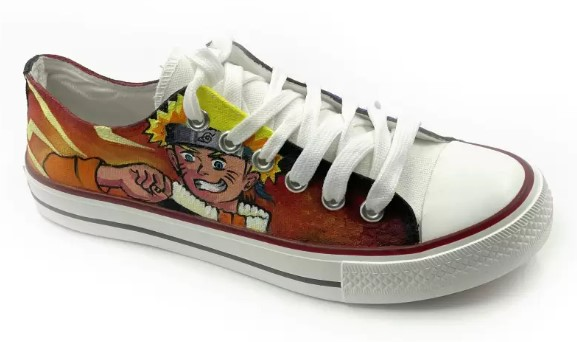

Home
About
We are passionate about anime and strive to bring the best anime-themed merchandise to our customers. Our Naruto printed T-shirts are made from high-quality fabric, ensuring comfort and durability. Each design is carefully crafted to capture the essence of the beloved Naruto series. Whether you are a casual fan or a hardcore anime enthusiast, our products are designed to meet your expectations.
Our printing process uses advanced techniques to ensure vibrant colors and detailed graphics that won't fade over time. We also prioritize ethical manufacturing practices, ensuring that all our products are made in environmentally friendly and socially responsible ways. We believe in providing value and satisfaction to our customers, and our dedicated team works tirelessly to achieve this goal.
Anime t-shirts are awesome because they're made with really soft, comfy material and the designs are super cool! The prints are bright and detailed, showing off your favorite anime characters perfectly. Plus, they hold up well wash after wash, so you can rock your favorite anime look for a long time. Whether you're a collector or just love expressing your anime fandom, these shirts are top-notch in quality and style!
Services
We provide the following services:
- Printing customized anime T-shirts
- Printing customized anime Shoes 
Contact
Phone: 818-124-2478
Email: naruto1@gmail.com